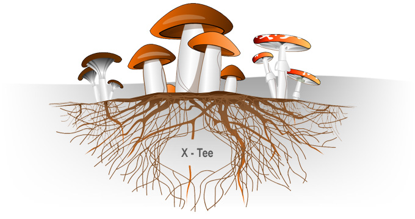

X-tee on mõiste, mida e-riigist rääkides väga sageli kasutatakse ning mida tihtilugu ka väliskülalistele tutvustatakse. Mis see salapärane X-tee siis õieti on?
Kui võrrelda riigi infosüsteemi linnaga, milles on palju erinevaid maju (andmekogusid), siis X-tee on nagu tänavavõrgustik, mida mööda toimub infoliiklus andmekogude vahel. Oma nimegi on X-tee saanud võrdlusest ristmikuga, kus kohtuvad andmekogud ja infosüsteemid, et üksteisega infot vahetada.
Illustratsioon: Lihtsustatud X-tee olemus
Riigi infosüsteem Eestis on hajusalt üles ehitatud. Selles on eri tehnoloogilistel platvormidel ja aegadel loodud andmekogusid. Et vormida kasutajale valmis üks mugav e-teenus, peavad andmekogud omavahel ladusalt suhtlema, sest teenus komplekteeritakse eri andmekogude andmetest.
X-tee võimaldab andmekogudel ja registritel omavahel turvaliselt ning teatud volituste piires suhelda.Ettevõtjad, ametnikud ja kodanikud saavad X-teest kasu selle e-teenuste kaudu.
X-tee vahendusel suhtleb üle saja infosüsteemi. Nende tuhandetest teenustest saab hea ülevaate riigi infosüsteemi haldussüsteemi (RIHA) vahendusel.
Avaliku- ja erasektori ettevõtted ja asutused saavad oma infosüsteemi X-teega liita, et kasutada teenuseid oma elektroonilises keskkonnas või pakkuda selle kaudu oma e-teenuseid. Liitumine nõuab mõningast investeeringute ja ressursside planeerimist. Kokkuvõttes on see ikkagi odavam lahendus, kui kõikide asutuste omavaheline mitmepoolsete andmevahetuslepingute sõlmimine. Esmalt peab allkirjaõiguslik esindaja X-teega liitumiseks registreerima liituja RIHA-s. Pärast seda võib ta määrata inimesed, kes liitumist tehniliselt korraldama hakkavad. X-teega liitumine ning selle kasutamine on tasuta. Liituja katab vaid enda infosüsteemi liidestamise kulud. Küll aga võib tekkida olukordi, kus mõni X-teega liidestatu küsib tasu oma teenuse tarbimise eest.
X-tee lähtub järgmistest põhimõtetest: